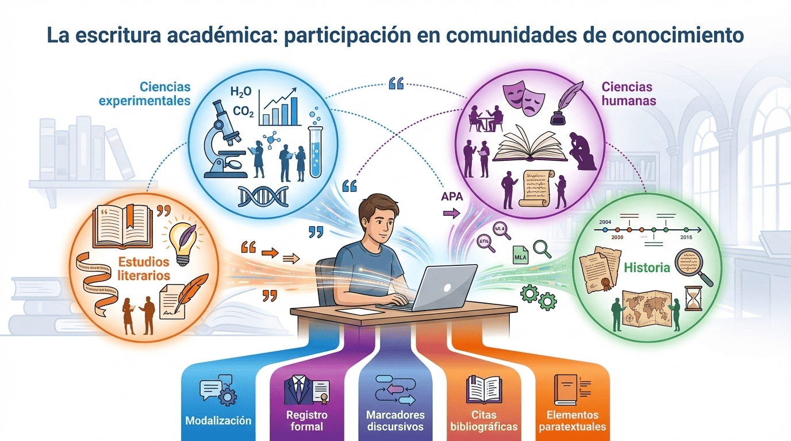
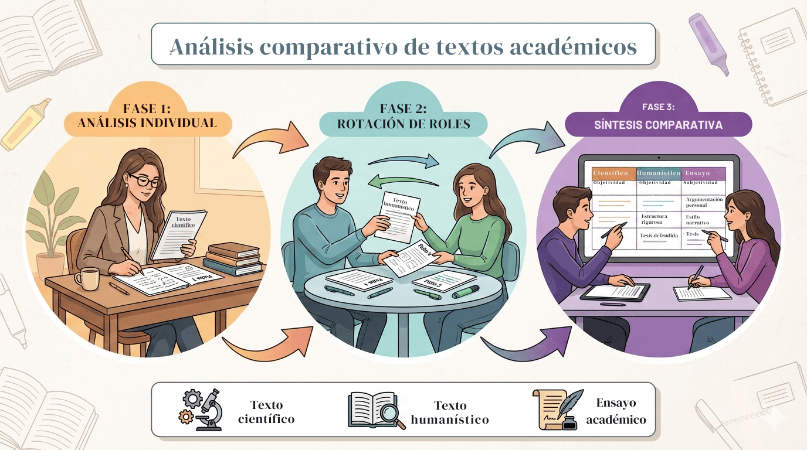

2Bac - Situación de aprendizaje 3.4: El arte de contar y decir: de la palabra al gesto: Nuestra voz en el debate académico
4. Textos académicos: científicos, humanísticos y ensayo
1. Los textos académicos como prácticas sociales
¿Por qué estudiar las características de los textos académicos? La respuesta es simple y directa: porque vas a escribir uno. El reto final de esta situación de aprendizaje es producir un ensayo académico sobre una obra literaria, y para hacerlo con solvencia, necesitas comprender cómo funciona este tipo de textos, qué convenciones siguen y qué se espera como autor académico.
Un texto académico no es simplemente “un texto sobre un tema de estudio”. Es mucho más que eso. Los textos académicos constituyen géneros discursivos reconocidos por las comunidades científicas y educativas, es decir, son formas de escritura que responden a convenciones compartidas por quienes investigan, enseñan y aprenden en contextos formales. Cuando escribes un ensayo académico, no solo transmites información: participas activamente en las prácticas de una comunidad, apropiándote de sus modos específicos de pensar, argumentar y comunicar el saber.
Esto significa que dominar la escritura académica implica algo más que conocer las reglas gramaticales o la estructura de un texto. Implica comprender que los textos académicos son procesos sociales orientados a metas que han sido desarrollados históricamente por comunidades de investigadores para construir, validar y difundir conocimiento. Cada disciplina (la literatura, la biología, la historia, la filosofía) ha desarrollado sus propias formas de escribir, sus propios géneros textuales que permiten a sus miembros comunicarse de manera eficaz y reconocerse mutuamente como parte de esa comunidad.
Esta toma de conciencia sobre la naturaleza construida y posicionada de la escritura académica es lo que se denomina alfabetización académica crítica: no basta con aprender a citar correctamente o a estructurar párrafos; es necesario comprender que escribir académicamente es participar en una conversación intelectual, aportando vuestra propia voz de manera fundamentada y responsable.
Infografía de elaboración propia creada con Gemini (2025). Escritura académica como género social(CC BY-NC-SA)
2. Tipología de textos académicos
No todos los textos académicos son iguales. Aunque todos comparten el rigor metodológico y el registro formal, las diferentes disciplinas han desarrollado convenciones textuales específicas que responden a sus objetos de estudio y a sus formas de construir conocimiento. Antes de analizar los tres tipos fundamentales de textos académicos, es importante que comprendas algunos elementos y recursos lingüísticos comunes a todos ellos:
Ilustración de elaboración propia creada con Gemini (2025). Escritura académica como participación en comunidades de conocimiento(CC BY-NC-SA)
Modalización. Es la forma en que el autor (o autores) expresa su grado de compromiso con lo que afirma. En los textos académicos, la modalización varía según el tipo: desde la máxima objetividad en los textos científicos (se busca “borrar” al autor) hasta la subjetividad razonada en el ensayo (donde el autor está explícitamente presente). Los recursos modalizadores incluyen verbos de opinión (considero, afirmo, sugiero), adverbios (probablemente, sin duda), tiempos verbales (condicional, subjuntivo) y construcciones impersonales.
Registro formal y propiedad léxica. Todos los textos académicos emplean un registro formal que se caracteriza por la corrección gramatical, la precisión terminológica y la ausencia de expresiones coloquiales. La propiedad léxica —el uso exacto de las palabras con el significado que les corresponde— es fundamental: debes evitar términos vagos o “palabras comodín” (cosa, tema, hacer) y emplear vocabulario técnico específico de cada disciplina con precisión.
Marcadores discursivos y conectores. Son elementos lingüísticos que organizan el texto y guían al lector en la comprensión de las relaciones lógicas entre ideas. Incluyen organizadores textuales (en primer lugar, por una parte, finalmente), conectores causales (dado que, porque, por lo tanto), contraargumentativos (sin embargo, no obstante, por el contrario), reformuladores (es decir, en otras palabras, dicho de otro modo) y ejemplificadores (por ejemplo, así, concretamente). El dominio de estos marcadores es esencial para construir textos coherentes y cohesionados.
Citas y referencias bibliográficas. La citación rigurosa es un rasgo distintivo del texto académico. Toda afirmación, dato o idea tomada de otros autores debe citarse adecuadamente, siguiendo normas estandarizadas (APA, MLA, Chicago, etc.). Las citas cumplen múltiples funciones: respaldar tus argumentos con autoridad académica, dialogar con la tradición crítica, permitir la verificación de tus fuentes y evitar el plagio. El aparato crítico (notas, referencias, bibliografía) es parte esencial de la estructura académica.
Elementos paratextuales y multimodales: Los textos académicos incorporan títulos informativos, subtítulos jerárquicos, tablas, gráficos, esquemas, notas aclaratorias y otros elementos visuales que facilitan la navegación, la comprensión y la comprobación del contenido. El diseño de estos elementos debe apoyar la transmisión del conocimiento y no introducir ruido informativo.
Se examinan tres tipos fundamentales de textos académicos, analizando en cada uno sus características lingüísticas, discursivas y pragmáticas distintivas.
Textos científicos
Los textos científicos se inscriben en el ámbito de las ciencias experimentales y formales (física, química, biología, matemáticas) y responden a protocolos comunicativos altamente codificados. Imagina un artículo que informa sobre un experimento en un laboratorio: el lenguaje es preciso, objetivo y verificable.
Propósito y convenciones
Se caracterizan por la búsqueda sistemática de objetividad, universalidad y verificabilidad. Esto significa que:
Objetividad: El autor se “borra” del texto, minimizando su presencia subjetiva.
Universalidad: Los hallazgos pretenden ser válidos en cualquier contexto.
Verificabilidad: Otros investigadores deben poder replicar el experimento o la observación.
Características lingüísticas y discursivas
Rasgo lingüístico
Descripción y ejemplos
MODALIZACIÓN
Mínima y registro impersonal
El discurso científico busca minimizar las marcas de subjetividad mediante:
Uso sistemático de la tercera persona.
Construcciones impersonales:“Se observa que…”, “Se puede concluir que…”.
Voz pasiva:“Fue analizado”, “Los datos fueron procesados”.
Modalidad enunciativa casi exclusiva (afirmaciones, no opiniones).
LÉXICO
Técnico monosémico
Cada término tiene un significado único y preciso que no admite ambigüedades:
Préstamos de lenguas clásicas:mitosis, fotosíntesis.
Acrónimos y símbolos: ADN, CO₂, pH, H₂O.
Neologismos técnicos: términos creados para nuevos conceptos científicos.
MORFOSINTAXIS
Nominalización y condensación
La nominalización es el rasgo distintivo del estilo científico. Permite sintetizar información compleja:
“La temperatura aumentó”→“El aumento de la temperatura”.
“El clima cambia”→“El cambio climático”.
“Se observó el fenómeno”→“La observación del fenómeno”.
SINTAXIS
Compleja y cohesión lógica
Oraciones enunciativas con estructura lógica compleja.
Subordinadas causales, consecutivas, condicionales y finales: establecen relaciones de causa-efecto.
Conectores lógicos:por lo tanto, en consecuencia, dado que, si ... entonces.
ESTRUCTURA
Modelo IMRD
La estructura canónica en artículos de investigación:
I Introducción
M Metodología
R Resultados
D Discusión
Introducción: Problema, objetivos, hipótesis.
Metodología: Procedimientos experimentales.
Resultados: Datos obtenidos.
Discusión: Interpretación y conclusiones.
Ejemplo de fragmento científico
La experiencia fue realizada durante el curso 2012-2013 por 14 alumnos de 1º de bachillerato (16 y 17 años), que cursaban la modalidad científica en un instituto rural. Para elegir el tema a investigar se realizó una puesta en común en la clase donde se dio a elegir a los alumnos en qué temas, de los vistos durante el curso, querían profundizar. Entre todos seleccionaron dos relacionados con las funciones de los seres vivos, en concreto con la nutrición y la relación, y uno conectado con el estudio de los microorganismos. En base a estos, el profesor proporcionó las siguientes preguntas de investigación: a) relativa a la función de nutrición: ¿Cómo influye la alimentación en el adiestramiento y el metabolismo de un roedor?; b) relativa a la función de relación: ¿Qué cantidad de anestesia es la más efectiva para que un pez alcance la fase de anestesia total?; c) relativa a los microorganismos: ¿Qué zonas de un instituto son las que están más sucias? Se decidió que fuera el profesor quien proporcionara las preguntas, dado que una de las principales dificultades del alumnado al realizar una indagación es seleccionar una pregunta que pueda ser investigable.
Fuente: Ansón, J. A., & Bravo Torija, B. (2017). Resultados e implicaciones de una propuesta para promover el desarrollo de las destrezas científicas en un aula de Biología de bachillerato. Revista Electrónica de Enseñanza de las Ciencias, 16(1), 132-151. http://reec.uvigo.es/volumenes/volumen16/REEC_16_1_7_ex1079.pdf
Observa los rasgos característicos:
Tercera persona e impersonales:“La experiencia fue realizada”, “se realizó”, “se dio a elegir”.
Precisión terminológica:indagación, pregunta investigable, función de nutrición, metabolismo.
Datos precisos: 14 alumnos, 1º de bachillerato, 16-17 años, curso 2012-2013.
Conectores causales:“dado que”.
Ausencia total del “yo” del investigador.
Textos humanísticos
Los textos humanísticos corresponden al ámbito de las ciencias sociales y humanas (filosofía, historia, sociología, lingüística, estudios literarios). Tu ensayo pertenece a este ámbito.
Propósito y convenciones
Si bien comparten con los textos científicos el rigor metodológico, presentan diferencias significativas: admiten un mayor grado de subjetividad interpretativa, dado que su objeto de estudio son fenómenos sociales, culturales e históricos que requieren interpretación y contextualización.
Piensa en la diferencia: analizar una reacción química es distinto de analizar El cuarto de atrás de Carmen Martín Gaite. La novela no se puede “medir” ni “pesar”; requiere interpretación, hermenéutica, contextualización histórica y cultural.
Características lingüísticas y discursivas
Rasgo lingüístico
Descripción y ejemplos
MODALIZACIÓN
Epistémica y presencia del autor
La presencia del autor es más visible, aunque mediada por estrategias de atenuación:
Verbos de opinión:considero que, se puede afirmar que, parece evidente que.
Adverbios modales:probablemente, posiblemente, sin duda.
“Escudos” o atenuadores: podría interpretarse, es plausible que, resulta fundamental.
LÉXICO
Abstracto y conceptual
A diferencia del léxico técnico monosémico de las ciencias experimentales, el vocabulario humanístico es más abstracto:
Terminología abstracta y conceptual:epistemología, paradigma, dialéctica, hegemonía, subjetividad, intertextualidad, metaficción.
Adjetivos valorativos y modalizadores:valioso, relevante, problemático, crucial.
Mayor variedad estilística comparada con los textos científicos experimentales.
MORFOSINTAXIS
Nominalización moderada
Aunque también emplea la nominalización, es menos sistemática que en textos científicos:
Nominalización conceptual:“alfabetización académica”, “la construcción del conocimiento”, “la interpretación del fenómeno social”.
Mayor presencia de verbos de proceso mental:interpretar, analizar, considerar, comprender.
Uso frecuente de sustantivos abstractos derivados:significación, relevancia, complejidad.
SINTAXIS
Compleja y marcadores discursivos abundantes
Subordinación compleja similar a los textos científicos, pero con mayor presencia de subordinadas concesivas y condicionales.
Marcadores metadiscursivos:desde una óptica sociológica, desde el punto de vista histórico.
Conectores contraargumentativos (esenciales para el pensamiento crítico): no obstante, por el contrario, si bien es cierto que.
Reformuladores:dicho de otro modo, en términos de, es decir.
ESTRUCTURA
Argumentativa con aparato crítico denso
A diferencia del modelo IMRD, los textos humanísticos siguen una estructura argumentativa:
Introducción: Presentación del problema, contextualización, tesis interpretativa.
Desarrollo argumentativo: Exposición de datos textuales, argumentos interpretativos, refutación de posiciones alternativas.
Síntesis conclusiva: Cierre interpretativo que no necesariamente “resuelve” el problema.
Aparato crítico denso: Sistema extenso de citas bibliográficas, referencias intertextuales, notas aclaratorias que dialogan con la tradición académica.
Ejemplo de fragmento humanístico
La alfabetización académica puede definirse como el proceso de enseñanza orientado a favorecer el acceso de los estudiantes a las diferentes culturas escritas de las disciplinas. Es el intento denodado por incluirlos en sus prácticas letradas, las acciones que han de realizar los profesores, con apoyo institucional, para que los universitarios aprendan a exponer, argumentar, resumir, buscar información, jerarquizarla, ponerla en relación, valorar razonamientos, debatir, etcétera, según los modos típicos de hacerlo en cada materia. Conlleva dos objetivos que la intervención pedagógica debe ir resolviendo a lo largo de la formación universitaria: enseñar a participar en los géneros propios de un campo del saber y enseñar las prácticas de estudio adecuadas para aprender en él. De esta forma, la alfabetización académica señala el modo en que deberían incluirse los alumnos en las culturas de las disciplinas científicas y en las actividades de producción y análisis de textos requeridas para aprender en la universidad.
Enumeraciones y ejemplificaciones:“exponer, argumentar, resumir…”.
Marcadores discursivos:“de esta forma”.
Mayor presencia del autor (aunque sutil): el texto construye una definición interpretativa, no solo describe un fenómeno medible.
Ensayos académicos
El ensayo constituye un género híbrido que se sitúa en la frontera entre el discurso académico riguroso y la escritura reflexiva personal. Este es el género que vas a escribir.
Propósito y convenciones
Se caracteriza por su naturaleza exploradora, su tono personal y su pretensión de abordar un tema desde una perspectiva original sin aspirar necesariamente a conclusiones definitivas o exhaustivas. A diferencia de un artículo científico, el ensayo te permite explorar ideas, plantear preguntas, proponer interpretaciones con cierta libertad, siempre manteniendo el rigor académico.
El ensayo que escribirás es un género híbrido que:
Combina secuencias expositivo-explicativas (para definir conceptos, contextualizar) con secuencias argumentativas-deliberativas (para defender tu interpretación).
Gestiona la subjetividad de forma objetivada: la “subjetividad razonada”.
Valora la “voluntad de estilo”: uso de figuras retóricas al servicio de la claridad, no del ornato.
Características lingüísticas y discursivas
Rasgo lingüístico
Descripción y ejemplos
MODALIZACIÓN
Explícita: “subjetividad objetivada”
El reto es aprender la “subjetividad objetivada”: expresar opiniones fundamentadas con marcadores académicos:
❌ Registro coloquial (evitar)
✅ Registro académico (usar)
Creo que la novela es genial.
Los datos textuales sugieren que la novela subvierte las convenciones del realismo.
En mi opinión, el autor quiere decir.
Podría considerarse que la estructura metaficcional cumple una función política.
Me parece que…
Resulta significativo que … / Es plausible interpretar…
Primera persona legítima:“como argumentaré”, “mi tesis es que”, “en este ensayo examinaré”.
Marcadores de evidencia:los datos muestran, se desprende que, como evidencia el texto.
Escudos o atenuadores: podría considerarse, es probable, resulta plausible.
LÉXICO
Académico con “voluntad de estilo”
El ensayo combina rigor conceptual con recursos expresivos que facilitan la comprensión:
Terminología técnica cuando es necesaria: metaficción, autodiegético, polifonía, intertextualidad.
Metáforas y analogías cognitivas que clarifican ideas complejas: “El cuarto de atrás funciona como un espejo deformado de la memoria”.
Interrogaciones retóricas:“¿Puede la ficción literaria constituirse en un espacio de resistencia política?”.
Léxico valorativo fundamentado:significativo, relevante, crucial (siempre respaldado con argumentos).
MORFOSINTAXIS
Equilibrio entre nominalización y expresividad
El ensayo equilibra la densidad informativa con la claridad expresiva:
Nominalización selectiva:“la recuperación de la memoria”, “la construcción de la identidad”, sin abusar del recurso.
Verbos de proceso mental y comunicativo:propone, sugiere, articula, cuestiona, representa.
Mayor presencia de verbos activos que en textos científicos, favoreciendo la fluidez lectora.
SINTAXIS
Compleja pero fluida y variada
Subordinación compleja con variedad de estructuras (causales, consecutivas, concesivas, finales).
Organizadores textuales explícitos:“en primer lugar”, “en segundo lugar”, “finalmente”, “por una parte… por otra”.
Conectores contraargumentativos:sin embargo, no obstante, por el contrario, si bien.
Reformuladores:es decir, en otras palabras, dicho de otro modo.
Variación sintáctica para evitar la monotonía: alternancia entre oraciones largas (desarrollo argumentativo) y cortas (énfasis).
ESTRUCTURA
Flexible pero lógica y anunciada
El ensayo presenta mayor libertad estructural que los otros tipos, pero mantiene organización clara:
Introducción: Presenta el tema, contextualiza la obra/problema, formula la tesis interpretativa de forma explícita y anuncia la estructura del ensayo.
Desarrollo argumentativo: Despliega argumentos organizados en secciones temáticas, incorpora evidencias textuales (citas), dialoga con la crítica, refuta interpretaciones alternativas.
Cierre reflexivo: Sintetiza los argumentos, proyecta implicaciones, invita a la reflexión (no necesariamente “conclusiones cerradas”).
Aparato crítico integrado: Citas textuales de la obra analizada, referencias bibliográficas a críticos, diálogo con la tradición interpretativa.
Ejemplo de ensayo académico
📌 Nota: El siguiente fragmento corresponde al análisis literario elaborado como reto final de la situación de aprendizaje anterior. Realmente, aún no es un ensayo académico tal como aquí se describe este tipo de texto académico, pero sí puede considerarse un borrador del mismo.
1. Introducción
Carmen Martín Gaite (1925-2000), narradora, ensayista y autora teatral salmantina, publicó El cuarto de atrás en 1978, año crucial de la transición democrática española, puesto que el 6 de diciembre de ese mismo año el pueblo español aprobó en referéndum la Constitución española. La obra, galardonada con el Premio Nacional de Literatura, representa un punto de inflexión en la trayectoria de la autora y en la narrativa española contemporánea. Frente al realismo social que había caracterizado sus primeras novelas —Entre visillos (1958), Ritmo lento (1963)—, Martín Gaite propone en El cuarto de atrás una compleja metanovela que fusiona autobiografía, fantasía y reflexión metaliteraria para articular simultáneamente la recuperación de la memoria histórica femenina de la España franquista y una reflexión sobre el proceso mismo de creación narrativa.
La hipótesis interpretativa que sostiene este análisis es que Martín Gaite construye una obra que utiliza la ambigüedad estructural y la fusión entre realidad y ficción como recursos formales esenciales para cuestionar las fronteras entre vida, memoria y escritura, sugiriendo la literatura como espacio de libertad y resistencia frente a los discursos del franquismo. Para fundamentar esta tesis, este ensayo examinará, en primer lugar, el contexto histórico-social de producción de la obra; en segundo lugar, analizará tres elementos técnicos fundamentales —la estructura metaficcional, el tratamiento del tiempo narrativo y el tipo de narrador—; y, finalmente, interpretará cómo estas elecciones formales articulan una crítica implícita de la realidad española franquista.
Fuente: Borrador de ensayo elaborado como reto final (noviembre 2025): Análisis académico de El cuarto de atrás de Carmen Martín Gaite.
Observa los rasgos característicos del ensayo académico:
Tercera persona explícita:“este ensayo examinará”, “La hipótesis interpretativa que sostiene este análisis”.
Tesis interpretativa clara y explícita: formulación directa de la interpretación que se defenderá.
Contextualización rigurosa: datos biográficos, históricos, literarios.
Estructura anunciada explícitamente:“en primer lugar… en segundo lugar… finalmente”.
Uso de rayas para incidentales: —Entre visillos (1958), Ritmo lento (1963)—, —la estructura metaficcional, el tratamiento del tiempo narrativo y el tipo de narrador—.
Modalización epistémica moderada:“representa”, “propone”, “sugiriendo” (no afirmaciones taxativas).
Equilibrio entre nominalización y verbos activos:“la recuperación de la memoria histórica” / “Martín Gaite propone …”.
“Voluntad de estilo”: el texto es claro, elegante, invita a la lectura (no es árido ni críptico).
Tabla comparativa: tres tipos de textos académicos
La siguiente tabla sintetiza las principales diferencias y similitudes entre los tres tipos de textos académicos analizados. Observa cómo cada tipo responde a las necesidades específicas de su disciplina, pero todos comparten el rigor metodológico, el registro formal y la función de construir y transmitir conocimiento.
Rasgo
Texto científico
Texto humanístico
Ensayo académico
Disciplinas
Ciencias experimentales y formales (física, química, biología, matemáticas).
Ciencias sociales y humanas (filosofía, historia, sociología, lingüística, estudios literarios).
Principalmente estudios literarios, filosofía, historia cultural, teoría crítica.
Objeto de estudio
Fenómenos naturales medibles, cuantificables y replicables experimentalmente.
Fenómenos sociales, culturales, históricos e ideológicos que requieren interpretación contextualizada.
Obras culturales, ideas, textos literarios y conceptos que se abordan desde una perspectiva original.
MODALIZACIÓN
Mínima: Se busca la máxima objetividad. El autor se “borra” mediante tercera persona, impersonales y voz pasiva.
Moderada: Subjetividad interpretativa controlada mediante verbos de opinión, adverbios modales y atenuadores.
Explícita: “Subjetividad objetivada”. Primera persona legítima combinada con marcadores de evidencia y escudos atenuadores.
LÉXICO
Técnico monosémico: Terminología unívoca, préstamos del griego y latín, acrónimos, símbolos. Precisión absoluta.
Abstracto y conceptual: Vocabulario especializado pero polisémico, adjetivos valorativos, mayor variedad estilística.
Técnico con “voluntad de estilo”: Combina rigor terminológico con metáforas cognitivas, analogías e interrogaciones retóricas.
MORFOSINTAXIS
Nominalización sistemática: Transformación de verbos en sustantivos para condensar información y facilitar progresión temática.
Nominalización moderada: Uso selectivo del recurso. Mayor presencia de verbos de proceso mental (interpretar, analizar, comprender).
Equilibrio entre nominalización y expresividad: Combina densidad informativa con verbos activos que favorecen la fluidez lectora.
SINTAXIS
Compleja y lógica: Subordinación causal-consecutiva, conectores lógicos estrictos (por lo tanto, dado que).
Compleja con marcadores sofisticados: Mayor presencia de conectores contraargumentativos, reformuladores y organizadores de perspectiva.
Compleja, pero fluida y variada: Subordinación diversa con variación sintáctica para evitar monotonía. Alternancia entre oraciones largas y cortas.
Argumentativa con aparato crítico denso. Introducción (tesis), desarrollo argumentativo con refutación, síntesis conclusiva. Sistema extenso de citas.
Flexible pero lógica y anunciada. Introducción (tesis explícita + anuncio de estructura), desarrollo temático, cierre reflexivo abierto.
CITAS Y REFERENCIAS
Datos experimentales, estudios previos, fuentes primarias de investigación. Función: respaldar resultados y situar la investigación.
Aparato crítico denso con citas bibliográficas, referencias intertextuales, notas aclaratorias. Función: dialogar con la comunidad académica.
Citas textuales de la obra analizada y referencias a críticos literarios. Función: fundamentar la interpretación y dialogar con la tradición crítica.
Ejemplo típico
Artículo de investigación científica publicado en revista especializada (Nature, Science, revistas del CSIC).
Artículo académico de sociología, historia, lingüística o estudios culturales en revista universitaria.
Ensayo de análisis literario, filosófico o cultural. Trabajo de investigación en Bachillerato (en algunas autonomías).
Tu reto
—
—
✍️ Escribir un ensayo académico de análisis literario que demuestre dominio de las características lingüísticas, discursivas y estructurales del género.
💡 Reflexión final
Como puedes observar, no existe un único “texto académico”, sino diferentes tipos que responden a las convenciones de cada disciplina. Tu tarea es aprender a transitar entre estos registros, reconociendo cuándo debes adoptar la objetividad máxima del texto científico, la interpretación fundamentada del texto humanístico o la exploración reflexiva del ensayo académico. El dominio de estos géneros te permitirá participar activamente en las comunidades académicas y construir conocimiento de forma rigurosa y crítica.
3. Cuestionario interactivo sobre textos académicos
Responde las preguntas sobre las características de los textos académicos: científicos, humanísticos y ensayos.
Su navegador no es compatible con esta herramienta.
4. Análisis comparativo entre textos académicos
Más arriba habéis conocido las características principales de los textos académicos y habéis distinguido entre textos científicos (de las ciencias experimentales), textos humanísticos (de las ciencias sociales y humanas) y el ensayo académico. Habéis explorado sus rasgos lingüísticos, discursivos y pragmáticos mediante contenidos teóricos y un cuestionario interactivo. Es el momento de aplicar ese conocimiento de manera práctica. Esta actividad os propone analizar textos académicos reales, publicados en revistas científicas y repositorios especializados, para identificar en ellos las características que habéis estudiado y compararlos sistemáticamente.
Recordad que en 3. Mini reto de esta situación de aprendizaje ya trabajasteis analizando y comparando vuestro propio análisis literario con ensayos académicos modelo. Sin embargo, en aquel momento aún no conocíais los rasgos técnicos específicos de los textos académicos: trabajasteis de manera exploratoria, identificando diferencias de forma intuitiva mediante la rutina Veo-Pienso-Pregunto. No obstante, después de haber estudiado sistemáticamente las características de los textos académicos, disponéis de herramientas conceptuales precisas para realizar un análisis mucho más riguroso y técnico. Ya no se trata solo de observar diferencias, sino de identificar, nombrar y explicar rasgos específicos: modalización, nominalización, léxico monosémico o polisémico, estructuras impersonales, aparato crítico, etc. Además, en esta ocasión no analizaréis vuestros propios textos, sino textos académicos profesionales publicados, lo que os permitirá concentraros en el análisis objetivo.
Para realizar esta actividad utilizaréis una estrategia de trabajo por estaciones (también llamada estaciones de aprendizaje o trabajo rotatorio). Trabajaréis en parejas y completaréis dos fichas de análisis más una tabla de síntesis comparativa:
En una ficha analizaréis un texto científico y un texto humanístico.
En la otra ficha repetiréis el análisis con otro texto científico y otro texto humanístico, invirtiendo los roles.
Finalmente, completaréis juntos una tabla de síntesis donde compararéis globalmente textos científicos y humanísticos.
La clave está en la rotación de roles dentro de la pareja:
En la primera ficha, un miembro se centra en el texto científico y el otro en el humanístico.
En la segunda ficha, intercambiáis: quien trabajó el científico pasa al humanístico y viceversa.
De este modo, ambas personas analizan textos de los dos tipos, pero en momentos distintos. Esto os permite comparar, discutir y completar la mirada del otro.
Finalmente, la actividad se organiza en tres fases:
Ilustración de elaboración propia creada con Gemini (2025). Análisis comparativo de textos académicos(CC BY-NC-SA)
Fase 1ª: Análisis individual de textos académicos.
Fase 2ª: Rotación y análisis individual.
Fase 3ª: Comparación conjunta y síntesis.
Además, como es habitual, se proporciona los materiales de la actividad necesarios, así como una lista de cotejo para guiar y evaluar los diferentes procesos que componen esta actividad comparativa.
Fase 1ª. Análisis individual de textos académicos
En esta primera fase, cada miembro de la pareja analizará individualmente uno de los dos textos de la Ficha 1: uno científico y otro humanístico. El objetivo es identificar y registrar las características específicas de cada tipo de texto académico.
Procesos de trabajo:
Proceso 1º: Distribución de roles. Decidid quién será inicialmente Analista A (texto científico) y quién será Analista B (texto humanístico).
Proceso 2º: Acceso a los textos académicos. Acceded a los textos que os corresponden según vuestro rol. Vid. Materiales de la actividad.
Proceso 3º: Lectura atenta y anotación. Lee tu texto asignado con atención. Durante la lectura:
Subraya o anota ejemplos de los rasgos característicos que habéis estudiado.
Presta especial atención a: modalización, tipo de léxico, estructuras sintácticas, presencia/ausencia del autor, citas y referencias, estructura organizativa.
Proceso 4º: Completar la columna correspondiente de la Ficha 1. Completa individualmente la columna que te corresponde en la Ficha de análisis comparativo 1:
Si eres Analista A, completa la columna "Texto científico".
Si eres Analista B, completa la columna "Texto humanístico".
Sé concreto/a y aporta ejemplos textuales cuando sea posible. No se trata de copiar fragmentos largos, sino de resumir rasgos y aportar ejemplos breves y significativos.
Fase 2ª. Rotación de roles y nuevo análisis (segunda ficha)
En la segunda fase, intercambiáis los papeles dentro de la pareja y analizáis un nuevo conjunto de textos. Quien antes había trabajado un texto científico pasará a un humanístico y viceversa.
Procesos de trabajo en la Fase 2ª:
Intercambio de roles. El antiguo Analista A se convierte ahora en Analista B y viceversa. Eso significa que cada uno se enfrenta a un tipo de texto diferente al de la fase anterior.
Lectura atenta del nuevo texto. Cada miembro lee su nuevo texto académico (científico o humanístico) aplicando los mismos criterios de observación que en la fase anterior: modalización, léxico, estructuras, citas, etc.
Completar la segunda ficha de análisis. Después de la lectura, completáis de nuevo, de forma individual, vuestra columna en la Ficha de análisis comparativo 2, ahora sobre los nuevos textos. Es importante que intentéis:
Reconocer patrones que se repiten respecto al texto del mismo tipo que analizasteis en la fase anterior.
Detectar también variaciones entre autores y disciplinas.
Fase 3ª. Puesta en común y síntesis comparativa
En la tercera fase, trabajáis juntos para poner en común lo observado en las dos fichas y elaborar una visión global de las diferencias y semejanzas entre textos científicos y humanísticos.
Procesos de trabajo en la Fase 3ª:
Puesta en común en pareja. Comentad vuestras fichas: qué os ha llamado la atención, qué os ha sorprendido, qué rasgos coinciden en los dos textos científicos, qué se repite en los humanísticos, etc.
Completar la tabla de síntesis comparativa. A partir de las dos fichas, completad juntos la Tabla de síntesis, donde deberéis formular, con vuestras palabras, características generales de los textos científicos y los humanísticos (objetivo, nivel de objetividad, léxico, estructuras, tipo de conectores, aparato crítico, etc.).
Reflexión final. Por último, respondéis a unas preguntas de reflexión que os ayudarán a conectar esta actividad con vuestro futuro ensayo académico literario sobre El cuarto de atrás o Historia de una escalera.
¡Enhorabuena por completar esta actividad de análisis comparativo!
Habéis desarrollado competencias fundamentales para reconocer, analizar y aplicar las características de los textos académicos. Este conocimiento os será imprescindible cuando redactéis vuestro ensayo académico literario y cuando, en el futuro, tengáis que producir textos académicos en contextos universitarios o profesionales. En las próximas sesiones buscaréis fuentes académicas en repositorios especializados para fundamentar vuestro ensayo literario sobre El cuarto de atrás o Historia de una escalera.
Materiales de la actividad
Una vez comprendidas las fases y procesos de trabajo, podéis acceder aquí a todos los materiales necesarios: textos académicos, Ficha 1, Ficha 2 y tabla de síntesis. Se presentan en un formato desplegable para que consultéis cada elemento cuando lo necesitéis.
1. Textos académicos (acceso abierto)
A continuación se presentan los cuatro textos académicos que vais a utilizar en esta actividad. Recordad leer solo los fragmentos indicados para que el trabajo sea manejable.
Texto científico 1 (Fase 1 – Analista A)
Referencia bibliográfica: Mezhua-Velázquez, M. J. et al. (2022). Diversidad de mamíferos medianos y grandes del Ejido Zomajapa, Zongolica, Veracruz, México: implicaciones de manejo. Ecosistemas y recursos agropecuarios, 9(2), e3316. Epub 02 de junio de 2023. https://doi.org/10.19136/era.a9n2.3316
Tipo: Artículo de biología de la conservación (estudio de campo con trampas cámara).
Fragmento que analizar: Introducción y Materiales y Métodos (páginas 1-4).
Texto humanístico 1 (Fase 1 – Analista B)
Referencia bibliográfica: Pellisa, T.L. (2025). Narrativas del futuro. Imaginarios y ciencia ficción hispánica. Signa: Revista de la Asociación Española de Semiótica, 34, 13–22. https://doi.org/10.5944/signa.vol34.2025.43422
Tipo: Artículo académico de literatura comparada sobre imaginarios políticos en ciencia ficción.
Fragmento que analizar: Introducción y primer análisis (páginas 1-5).
Texto científico 2 (Fase 2 – nuevo Analista A)
Referencia bibliográfica: Villaseñor, J.L. et al. (2023). Riqueza y endemismo de la flora vascular de Guanajuato, México. Revista mexicana de biodiversidad, 94, e945282. Epub 29 de julio de 2024. https://doi.org/10.22201/ib.20078706e.2023.94.5282
Tipo: Ensayo académico-literario sobre la función de la literatura.
Fragmento que analizar: Primeras 3-4 páginas del discurso.
Publicaciones científicas con licencia CC
2. Ficha de análisis comparativo 1 (Fase 1ª)
En esta ficha cada miembro de la pareja trabaja de forma individual sobre su texto (científico u humanístico). Después, pondréis en común lo observado.
FICHA DE ANÁLISIS COMPARATIVO 1 TEXTOS CIENTÍFICOS VS. TEXTOS HUMANÍSTICOS
Nombres de la pareja: ________________________________________
Analista A (texto científico): ________________________________________
Analista B (texto humanístico): ________________________________________
Fecha: _______________
Aspectos a analizar
Texto científico (Analista A)
Texto humanístico (Analista B)
1. IDENTIFICACIÓN DEL TEXTO
Referencia bibliográfica completa
Disciplina o área
2. ESTRUCTURA Y ORGANIZACIÓN
Título y tipo de título
Copia el título y valora: ☐ Descriptivo y objetivo ☐ Incluye términos técnicos ☐ Anticipa con precisión el contenido
Copia el título y valora: ☐ Incluye conceptos abstractos ☐ Sugiere una interpretación o tesis ☐ Anticipa con precisión el contenido
Organización interna
¿Cómo se organiza el texto? ☐ Sigue modelo IMRD o similar ☐ Presenta epígrafes numerados ☐ Incluye tablas o figuras
¿Cómo se organiza el texto? ☐ Estructura argumentativa (introducción, desarrollo, conclusión) ☐ Epígrafes temáticos ☐ Apartados dedicados a teoría, análisis, conclusión
3. MODALIZACIÓN Y PRESENCIA DEL AUTOR
Nivel de modalización
Tipo predominante: ☐ Muy baja (máxima objetividad) ☐ Media ☐ Alta
Ejemplos de expresiones que lo muestran:
Tipo predominante: ☐ Baja ☐ Media ☐ Alta (epistémica, valorativa)
Ejemplos de expresiones que lo muestran:
Presencia del autor/a
☐ Tercera persona o formas impersonales ☐ Primera persona plural (nosotros) ☐ Primera persona singular ☐ Pasiva refleja (se observa que…)
Ejemplo:
☐ Tercera persona o formas impersonales ☐ Primera persona plural ☐ Primera persona singular (yo) con registro académico ☐ Mezcla de varias formas
Ejemplo:
4. LÉXICO Y TERMINOLOGÍA
Tipo de vocabulario
☐ Terminología técnica y monosémica ☐ Abundancia de siglas, acrónimos y símbolos ☐ Léxico muy preciso y especializado
Anota 5–6 términos técnicos:
☐ Léxico abstracto y conceptual ☐ Términos propios de teoría literaria / humanística ☐ Adjetivos valorativos o interpretativos
Anota 5–6 términos técnicos o conceptuales:
Propiedad léxica
Precisión terminológica: ☐ Muy alta ☐ Alta ☐ Media
¿Aparecen palabras comodín? ☐ Apenas ☐ Algunas ☐ Bastantes
Precisión terminológica: ☐ Alta ☐ Media-alta ☐ Media
¿Aparecen palabras comodín? ☐ Apenas ☐ Algunas ☐ Bastantes
☐ Oraciones complejas con varias subordinadas ☐ Concesivas y adversativas (aunque, si bien) ☐ Perífrasis modales (podría considerarse, suele entenderse)
Ejemplo de oración representativa:
Conectores predominantes
☐ Causales (puesto que, ya que) ☐ Aditivos (además, asimismo) ☐ Ordenadores (en primer lugar, finalmente)
Anota 3–4 conectores frecuentes:
☐ Contraargumentativos (sin embargo, no obstante) ☐ Reformuladores (es decir, en otras palabras) ☐ Ordenadores del discurso
Anota 3–4 conectores frecuentes:
6. CITAS Y REFERENCIAS
Uso de citas y bibliografía
Número aproximado de citas en el fragmento leído: _______
☐ Citas a investigaciones empíricas ☐ Citas a manuales o marcos teóricos ☐ Sistema de citación tipo APA u otro
Ejemplo de cita:
Número aproximado de citas en el fragmento leído: _______
☐ Citas a obras literarias ☐ Citas a crítica literaria o teoría ☐ Notas a pie o referencias en el cuerpo del texto
Ejemplo de cita:
7. SÍNTESIS INDIVIDUAL
Rasgos que mejor definen este texto
Resume en 3–4 líneas qué rasgos te parecen más característicos del texto científico analizado:
Resume en 3–4 líneas qué rasgos te parecen más característicos del texto humanístico analizado:
Guardad esta ficha. La utilizaréis en la Fase 3ª para comparar patrones con la segunda ficha y completar la tabla de síntesis.
3. Ficha de análisis comparativo 2 (Fase 2ª)
La Ficha 2 tiene la misma estructura que la Ficha 1, pero se aplica a los otros dos textos. Podéis duplicar la Ficha 1 en papel o digitalmente, cambiando solo las referencias bibliográficas en la parte superior.
4. Tabla de síntesis comparativa (Fase 3ª)
TABLA DE SÍNTESIS: TEXTOS CIENTÍFICOS VS. HUMANÍSTICOS
Nombres de la pareja: ________________________________________
Fecha: _______________
Aspecto
Textos científicos (ciencias experimentales)
Textos humanísticos (ciencias sociales y humanas)
Objetivo comunicativo principal
Nivel de objetividad / subjetividad
Modalización predominante
Presencia del autor/a
Tipo de léxico
Estructuras sintácticas habituales
Conectores más frecuentes
Uso de citas y referencias
Elementos paratextuales característicos
REFLEXIÓN METACOGNITIVA FINAL
Responded juntos las siguientes preguntas de reflexión:
1. ¿Qué diferencias os han resultado más evidentes entre textos científicos y humanísticos?
2. ¿Por qué creéis que los textos científicos tienden a ocultar al autor mientras que los humanísticos permiten mayor presencia?
3. ¿Qué función cumple la modalización alta (atenuadores, verbos de opinión) en los textos humanísticos?
4. ¿Habéis encontrado también rasgos comunes entre ambos tipos de textos académicos? ¿Cuáles?
5. Pensando en vuestro ensayo académico literario sobre El cuarto de atrás o Historia de una escalera, ¿qué características de los textos humanísticos analizados deberéis aplicar?
6. ¿Qué aspecto del análisis de textos académicos os ha resultado más difícil de identificar? ¿Por qué?
Lista de cotejo de la actividad
Esta lista de cotejo os ayuda a autoevaluaros y a identificar qué procesos habéis completado. Marcad con ✓ los criterios cumplidos.
Lista de cotejo
CRITERIO
CUMPLIDO
FASE 1ª: ANÁLISIS INDIVIDUAL (Ficha 1)
He leído atentamente mi texto asignado (científico, humanístico o ensayo).
☐
He identificado rasgos característicos: modalización, léxico, estructuras sintácticas y citas.
☐
He completado mi columna de la Ficha 1 con ejemplos textuales precisos.
☐
FASE 2ª: ROTACIÓN DE ROLES (Ficha 2)
He intercambiado roles con mi compañero/a y analizado un texto diferente.
☐
He completado mi nueva columna de la Ficha 2 con ejemplos textuales del segundo texto.
☐
He detectado patrones comunes entre los dos textos del mismo tipo que he analizado.
☐
FASE 3ª: SÍNTESIS COMPARATIVA
Hemos puesto en común oralmente lo observado en las dos fases anteriores.
☐
Hemos completado la tabla de síntesis comparando los tres tipos de texto (científico, humanístico, ensayo).
☐
La tabla incluye comparación de todos los aspectos: modalización, léxico, morfosintaxis, sintaxis, estructura y citas.
☐
AUTOEVALUACIÓN GLOBAL Y METACOGNICIÓN
He participado activamente en todas las fases del análisis (individual, rotación y síntesis).
☐
Comprendo qué caracteriza cada tipo de texto académico y por qué son diferentes.
☐
He identificado aspectos concretos que debo mejorar en mi escritura académica.
☐
Estoy preparado/a para aplicar lo aprendido en la redacción de mi ensayo académico sobre literatura.
☐
Fortalezas detectadas (Qué ha funcionado bien en mi análisis)
{kind=link}
{kind=link}
{kind=link}